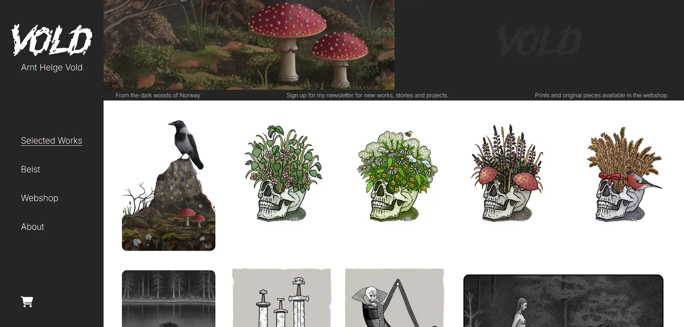

Arnt Helge Vold

A responsive frontend project focused on layout, structure and styling.
A dynamic frontend project involving application logic and interactions.
A larger project combining design, frontend development and user experience.